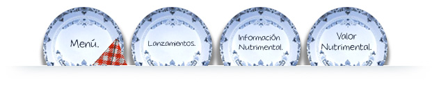
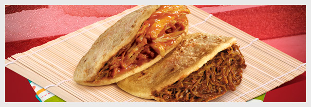

Lo mejor de las gorditas lo llevan dentro.

Los deliciosos platillos de Doña Tota han sorprendido el paladar de nuestros clientes, estamos preparados con un servicio muy especial y con un trato cálido para hacer sentir como en casa a cada uno de nuestros consumidores. En Gorditas Doña Tota la innovación siempre han sido una de nuestras prioridades, creando platillos nuevos y únicos preparados con ese sabor de casa que todos quieren, con un servicio rápido desde tu desayuno hasta la hora de la cena. Ven a disfrutar la gran variedad de guisos que tenemos, desde un sazón picante, gorditas ligeras, dulces, otras con queso y sin picante. No importa la temporada, en Gorditas Doña Tota siempre tenemos ese relleno especial para ti.
